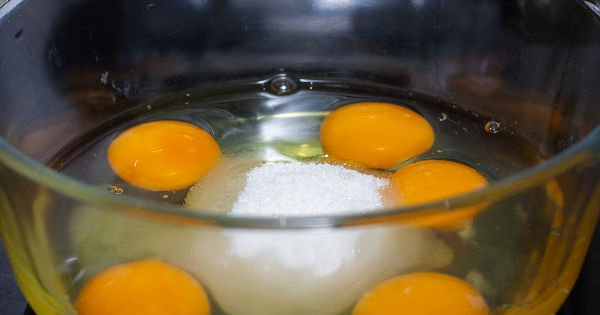
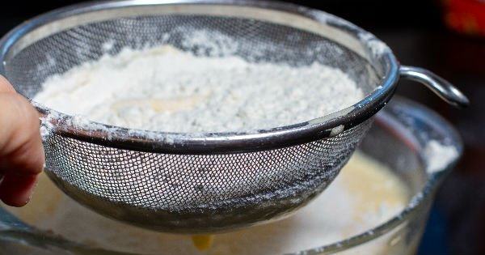
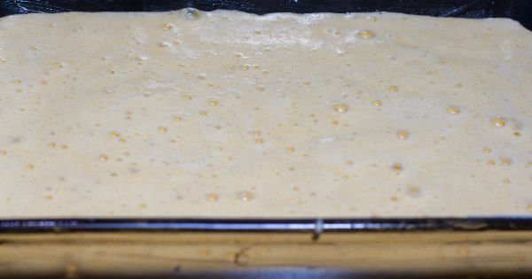
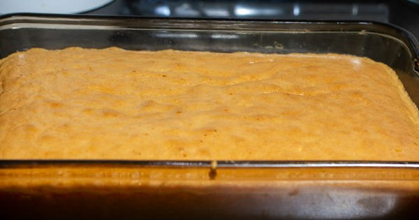
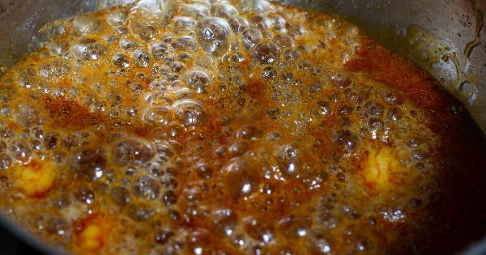
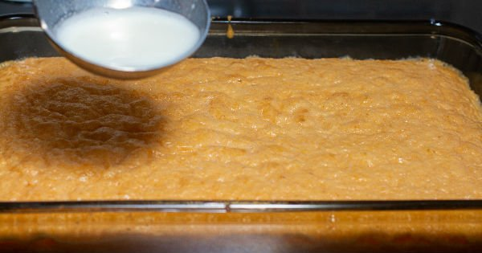
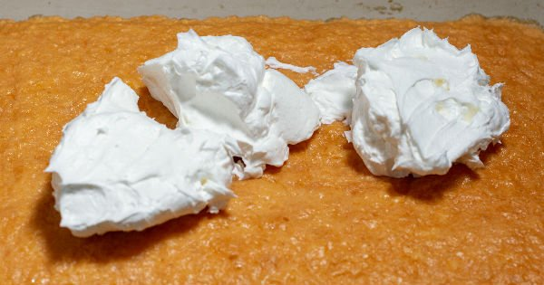
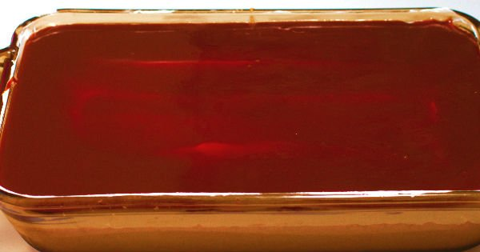
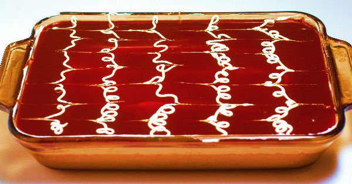

Orijinalinde üç süt karışımının kullanıldığı sütlü şerbet ile hazırlanan trileçe hafifliği ve sünger dokusuna sahip pandispanya kekiyle şöhreti kısa sürede
dilden dile yayılan enfes bir tatlı tarifi. Traliçe, triliçe ya da trilece diye telaffuz edenler olsa da tatlının doğru yazımı trileçe.
Çeşitli sos ve kremalarla servis edilen versiyonlarını yerinde yiyebileceğiniz gibi trileçe tarifini ev sıcaklığında hazırlayıp, sevdiklerinizle paylaşabilirsiniz.
Biz bu sefer oyumuzu karamelli orijinal trileçe tarifinden yana kullandık; ama siz farklı soslarla da onu deneyebilirsiniz. Tarifimizin içinde karamel
sosunun tarifini de bulabileceksiniz.
Tarif: Yasemin Gürsürer
Kaç Kişilik:8 Kişilik
Hazırlanma Süresi30 dakika
Pişirme Süresi35 dakika
- 5 adet büyük boy yumurta
- 6 yemek kaşığı toz şeker
- 7 yemek kaşığı un
- 1 paket kabartma tozu
- 1 paket vanilin
Şerbet için
- 2 su bardağı inek sütü
- 1 su bardağı keçi sütü
- 1 su bardağı manda sütü
- 1 su bardağı toz şeker
Karamel için
- 2 yemek kaşığı tereyağ
- 1 paket krema
- 1 çay bardağı toz şeker
- Derin bir karıştırma kasesinin içerisine yumurta ve şekeri ekleyip, şekerler eriyene ve karışımın rengi açılıp, krema kıvamına gelene kadar çırpın.

-
Un, kabartma tozu ve vanilini yumurtalı karışımın içerisine eleyerek ekleyin.

-
Spatula yardımıyla kuru malzemelerin sıvı malzemelerle birleşmesi için altan üstte doğru sürekli olarak karıştırın.
Güzelce karışmış olan kek harcını yağlanmış fırın kabınıza dökün ve üzerini düzeltin.

-
Trileçenin pandispanyasını önce 170 derece ısıtılmış fırında 10 dakika pişirin.
10 dakika sonunda fırın ısısını 150 dereceye indirip 20-25 dakika kadar pişirin.

-
Pişen pandispanyayı oda sıcaklığında soğumaya bırakın ve üzerine kürdan yardımıyla delikler açın.
-
Sütlü şerbeti için; inek sütü, manda sütü ve keçi sütünü tencereye alın. Şekerini de ekleyip eriyene kadar karıştırın.
Kaynamaya başladıktan sonra ocağın altını kapatın ve ılımaya bırakın.
-
Karameli için; ayrı bir sos tenceresinde toz şekeri kontrollü olarak eritin. Üzerine tereyağını ekleyin.
Fokurdamaya başlayan tereyağlı şekerin üzerine kremayı ekleyin ve karıştırıp ocaktan alın, soğumaya bırakın.

-
Oda sıcaklığında soğumuş olan trileçe pandispanyasının üzerine ılık sütlü şerbeti ekleyin ve sütü iyice çektikten
sonra buzdolabında soğumaya bırakın.

-
Bu esnada 1 paket krem şanti hazırlayın. Soğumuş olan kekinizin üzerine ince bir tabaka halinde krem şantiyi yayın.

-
Hazırlamış olduğunuz karameli de üzerine güzelce yayın.

-
Ardından dilimleyin ve soğuk olarak servis edin. Afiyetler olsun!

Afiyet olsun